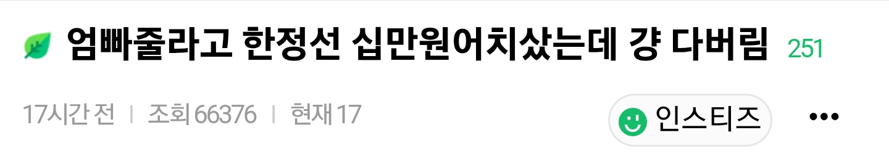
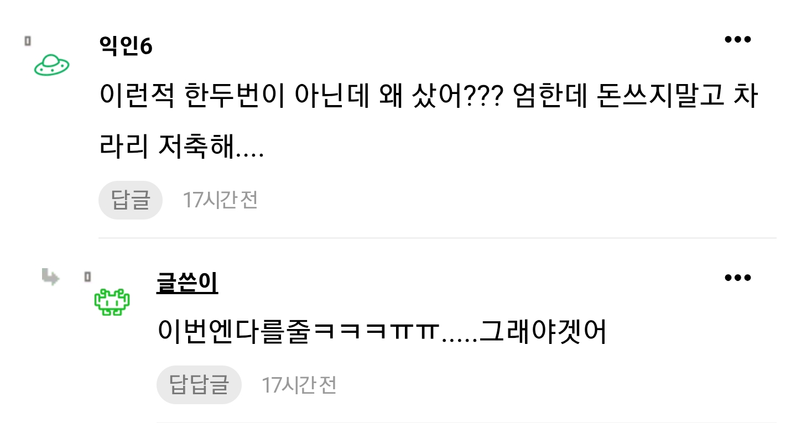
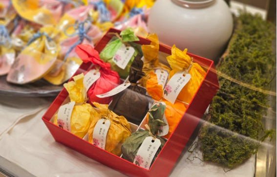
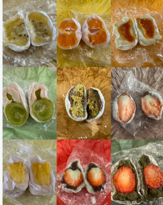

오픈런까지 해야되는 찹쌀떡이라고 함




여기 쿨찐 웰케 많냐? 한정선이 어쩌구 소고기 사갔어야 하느니 진짜 ㅂㅅ 같네
여행지에서 봤다는, 우리 가족은 왜 이러냐고 울부짖었다는 딸 같은 케이스지.
그냥 부모가 사랑을 주는 법도 받는 법도 잘 모르는 거임.
애초에 여행 가기 싫다고 했을수 있음 부모는. 자기만족을 위해 억지로 끌고와서 좋은 리액션을 바라는건 자식이 더 문제라고 생각람.
힘들게 산 노인들 중에 저런사람 많은듯
아 저게 한정선이구나 가족 중에 한 명이 사와서 뭔지 모르고 먹었는데 걍 찹쌀떡에 생크림 바른 과일 넣은 거 같던데 내가 과일하고 생크림을 별로 안좋아해서 별로긴 한데 비싸고 웨이팅해서 사온데다 공짜로 얻어 먹은 거라 걍 맛있다고 하긴 했는데
잘했셔
맞어 걍 맛잇다고맙다하면대
부모가 좋아하는것을 사주는게 아니라 본인이 좋아하는걸 사주고 부모 성정이 이따위라 욕쳐먹는다고 징징거리는 케이스.
비슷한 사례로 일본 도쿄 영크크 핫플레이스 오픈런 2시간 대기 존맛탱 식당을 부모님 데려가서 한소리 듣는게 있지.
뭘 사주고 싶으면 부모님한테 물어보고 부모님이 원하는걸 사주고 해주면 됨.
본인 만족감만 채우려다 핀잔에 환불크리 소리 듣지 말고.
한정선 개핫한거야 2~30대나 알지 나이드신 노인네한테는 사기꾼이 팔아먹는 바가지 찹쌀떡으로밖에 안보임.
딸이 유행하는거 가족들이랑 먹어보려고 웨이팅까지해서 사오면 기특하다 고맙다 소리가 먼저지... 같이 고생시킨것도 아니고
너가 말한 수준은 어머 이게 유행이야~ 엄마 입맛엔 안 맞네 이정도면 된거고
바가지 어쩌고 소리 나온건 아래 댓글 말마따나 마음이 가난한게 맞는 것 같음
오죽 딸이 헛짓거리에 한두번도 아니고 여러번이나 돈쓰고 다녔으면 부모가 저정도로 매몰찰가 하는 생각은 안드나 보구나.
애초에 딸 입장에서 편파적으로 쓰는 글에 부모에 대한 신빙성이 있겠냐.
그 와중에 마음은 후련하다고 하는거 보니 착한딸 나쁜부모 이미지 만든건 또 뿌듯했나 봄.
부모가 '사랑하는 우리딸이 나를 위해서 이렇게 고생해가며 사왔구나 감동이다'라는 말을 할 수는 없는거임?
제발 헛짓거리 하지 말라는 말은 죽어라 안듣는 딸이 또 헛짓거리를 했구나. 라는 생각이 들었나 보지.
이딴 댓글에 추천이 7개나 박힌거보면 가정환경이 얼마나 중요한지 알수가 있넼ㅋㅋㅋㅋ 진짜 마음이 가난하다
모지리 개붕이 키우는 부모 마음에 대못박힌다는것도 좀 생각해 보렴.
ㅋㅋㅋㅋㅋㅋ 쿨찐 나왔네
너 부모한테 사랑받아본적 없지?
닉값 하십니다. 짝짝.
ㅂㅁ 몇갠지좀 알려줘
ㅂㅁ를 개수로 세는 인성 잘 알겠어.
왜 그럼 멀로 세는데..
아니 시발 부모 말고 붐업 몇개냐고 ㅋㅋㅋㅋㅋㅋㅋㅋㅋㅋㅋㅋㅋㅋㅋ 뭔 말인가했네 ㅋㅋㅋㅋㅋㅋㅋ
부모 말고 비추말하는거아님...?
사고방식 대단하다. 니 자식들이 감동하겠어~
개붕아 여기서 T같은 댓글달면 F돌고래들이 몰려온단다
가난한 집은 마음도 가난함
이거 딱 10년전에도 딸기모찌라고 존나 유명했는데 이제와서 한정선이라고 줄서가면서 먹는지 노이해 ㅋㅋㅋㅋㅋ
지금도 과일모찌 여기저기서 많이 파는데 한정선이라고 저기만 바이럴이 존나 잘됐나봐 진짜 욕이 안나올수가없다 유행 오지게 따라다니는것도 좀 촌스러운거같애
10만원 이런 떡으로 사오지 말고 돈으로 달란거같은데
나도 에펠탑 레고 사고 6살 조카 주려고 샀다했었을 때 엄청 혼났었지
집에 두는 것도 싫어하셔서 사무실에 뒀음
이후로 레고 큰거 살 때는 취미용 공간으로 배송지 바꿈
메스 사자비도 부모님은 30만원 짜리로 알고 있음
매번 저런걸로 쿠사리 먹으면서 저러는거 보면 ...
그냥 과일모찌 아니냐? 안처먹다가 왜갑자기 난리야
한국인만저런가 저런부모 ㅈㄴ많은거같음
난 성심당 빵만 10만원치 사가는데 뭔 빵을 10만원치나 사오냐고 하지만 맛있게 먹고 다음부터는 조금만 사오라고 하시는데
에효
댓글 왜 이럼... 친구들이 주는 선물만 해도 아무거나 받아도 일단 고맙지 않나??? 왜 자꾸 선물 종류가 문제래.. 맛있는 걸 먹으면 사랑하는 사람도 주고 싶어하는 게 당연한 거 아닌가
주는 사람 기준에서 그렇게 생각하니까 그런거임
갑각류 알러지 있는사람한테 킹크랩 선물하면서
왜 화내지? 라고 생각하는거랑 비슷함
받는 사람 입장에서 그만큼 쓰잘대기 없다고 생각하는 물건이니까 저러는거야
그만큼 쓰잘대기 없다고 생각하는건 사람마다 다르니까 받는사람이 누군지 생각해서 줘야한다는거고
저 부모가 ㅈㄹㅈㄹ하는것도 자식이니까 ㅈㄹㅈㄹ하는거지
거래처에서 받았으면 그냥 저냥 감사감사하고 넘어갔겠지
좋은 맘으로 행한 결과가
항상 좋은 결과로 안이어져
이게 현실이고 인간관계임
나머진 그래도 이해해보려면 다 이해되는데 부모가 자식한테 저러는 게 이해가 안돼... 왜???
모두를 이해할수 잇으면 이세상엔 전쟁이 없겠지
묻지마 폭행이나 칼부림을 이해할수있어?
이해못한다고 방지를 안할수는없잖아
그런거지
부모가 인성이 개차반이네. 뭔 사회생활 좆박은 놈들인가
사진없는글 안믿음
민초한정선이라고 생각하면 이해된다 자식이 돈을 허투루 쓰네
여기 개붕이들 여론은 한정선 나오면 존나 욕하면서
그거 사온 딸래미 뭐라하는 부모는 또 나쁜거야? ㅋㅋㅋ
여기서 쿨찐병 걸려서 한정선 욕하는애들은 가족이 저거 사오면 감사합니다 하고 좋다고 먹는거지?
요즘 스마트폰으로 유툽을 자주 보시니까 어른들도 다 유행에 민감함. 내가 사먹는거면 당연히 한정선 그걸 왜 줄서서 사먹음? 소리가 나오지. 근데 내 시간만 쓰면 우리 가족은 한정선을 바로 먹어볼수 있는 거잖아. 나중에 어디가서 땡땡이네 엄마도 요즘 유행하는 한정선 먹어봤어? 이런 대화 할때 먹어봤다고 하실수 있잖아. 그래서 사다드리는거지. 근데 글처럼 저런 반응이면 뭐 그냥 다 버려버리고 담부턴 유행에 따라오시든 말든 알아서 하고 내 인생 사는게 맞긴하지.
부모님 두쫀쿠 너무 맛있어하셔서 사드릴때마다 리액션 폭발하시니 사드릴맛 나던데 ㅋㅋㅋ
가격듣고 시무룩해지시긴했지만
저런 부모들이 있더라고. 그냥 연락 끊고 전화번호 바꾸고 사는게 답임.